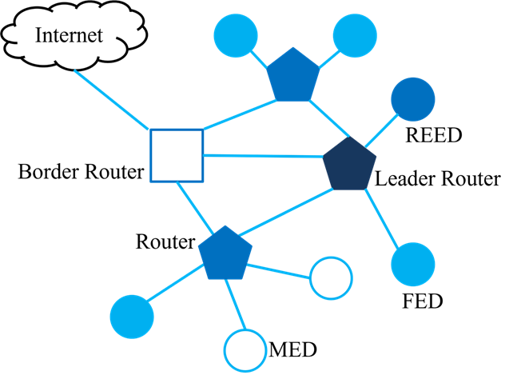

Thread 协议
Thread 是一种基于 2.4GHz (IEEE 802.15.4) 和 IPv6 的无线自组织网络协议，通常称为无线个域网 (WPAN)。Thread 专为低功耗、低延迟的物联网 (IoT) 设备而设计。它解决了物联网的复杂问题，解决了互操作性、范围、安全性、能效和可靠性等挑战。
本文概述了 Thread 协议的相关术语和概念、网络拓扑结构、无线电协处理器 (RCP) 模式以及示例工程。
术语和概念
本节介紹 Thread 协议內的设备类型與形成网络拓扑的关键组件以及开源的 Thread 网络协议。
设备类型
Thread根据设备在线程网络中可以承担的角色，区分了各种设备类型。
全线程设备 (FTD)
FTD可以在线程网络中同时作为路由器和终端设备运行。其无线电持续保持活跃。
最小线程设备 (MTD)
MTD始终是终端设备，依赖其父设备转发所有消息。
MTD有两个重要的子类型：
最小终端设备 (MED)
此类型设备无线电始终保持开启，可以及时接收来自父设备的消息。MED适合需要更高响应速度、并且能够承受较高能耗的设备，例如有持续电源或可充电电池的设备。
睡眠终端设备 (SED)
此类型设备通过大部分时间关闭无线电来节省能量，仅在定期唤醒与父设备通信时才开启。SED适合不需要频繁发送或接收数据的电池供电设备。
关键组件
领导路由器 (Leader Router)
领导设备负责管理网络，分配路由器ID并处理网络配置变更。领导是动态选举的，如果当前领导失效，其他路由器会接替以确保网络操作的连续。
路由器 (Router)
路由器在线程网络中路由数据包，帮助扩展网络范围并增强可靠性。路由器可以直接与其他路由器和领导通信。
如果当前领导失效，路由器也可以成为领导。
可成为路由器的终端设备 (REED)
这些终端设备在网络需要时有潜力成为路由器。只有在被领导提升为路由器时，它们才执行路由功能，从而保持资源的高效利用。
终端设备 (Child; End Device)
终端设备，也称为睡眠终端设备 (SED)，主要与单个父路由器或REED通信。它们不转发其他设备的数据包。SED节能效率高，因为大部分时间都处于低功耗状态。
全终端设备 (FED)
全终端设备类似于终端设备，但它们保持唤醒以更频繁地接收数据包。它们不路由数据包，只与其父路由器通信。
睡眠终端设备 (SED)
这些设备定期唤醒与父路由器交换数据，大部分时间都处于低功耗睡眠模式，适合电池供电的应用。
专员 (Commissioner)
专员负责对网络中新设备进行认证和配置。它处理安全的加入过程，确保只有授权设备才能加入网络。专员可以是嵌入线程网络内部 (本地) 或在外部操作 (外部)。
边界路由器 (Border Router)
边界路由器将线程网络连接到其他网络，如Wi-Fi、以太网或互联网。它提供外部连接并在线程网络和外部网络之间路由数据。
Openthread
OpenThread 是一个开源实现的 Thread 网络协议。 它由 Google 开发，并免费提供给开发者，以加速连接家庭和商用建筑的产品开发。
GitHub
OpenThread 以 BSD 3-Clause 许可证发布，并在 GitHub 上可用： https://github.com/openthread/openthread
网络拓扑
Thread 网络采用的是网状网络拓扑结构。这种拓扑具备以下特点：
自我愈合能力
如果网络中的某个节点失效，其他节点可以通过动态调整路由来继续保持网络的连通性。
多跳路由
信号可以通过多个中间节点传输，有助于扩大网络的覆盖范围和提高网络的可靠性。
动态角色选举
网络中的设备可以在不同的角色之间动态切换，如在需要时从子节点升级为路由器以支持更多的设备。
Thread 的这些拓扑特性使其非常适合于需要高可靠性和灵活性的物联网应用。
下图展示了一个线程网络拓扑示例。
{kind=link}

线程网络拓扑示例
RCP 模式
在协处理器设计中，应用程序运行在主处理器上，另一个控制处理器提供 Thread 无线电。这两个处理器通过带有标准协议 (Spinel) 的串行连接进行通信。在 RCP (无线电协处理器) 设计中，OpenThread 的核心运行在主处理器上，控制处理器仅实现带有 Thread 无线电的最小 MAC 层。RCP 和主处理器之间的通信通过串行接口上的 Spinel 协议由 OpenThread Daemon 管理。RCP 设计的优势在于 OpenThread 可以利用更强大主处理器的资源。为了确保 Thread 网络的可靠性，主处理器通常不会睡眠。对于对电源不太敏感的设备，这种设计非常有用。

RCP 模式
主要组件
主处理器
运行 OpenThread 堆栈的上层，包括 Thread 网络、网格路由和应用逻辑。
通常运行 POSIX 兼容的操作系统，如 Linux。
无线电协处理器 (RCP)
处理 OpenThread 堆栈的低层，特别是 802.15.4 PHY 和 MAC 层。
执行时间关键的无线电操作。
通过串行接口 (如 UART、SPI) 与主处理器通信。
RCP 方案介紹
RCP 方案 |
8771HTV |
8771GUV |
8771GTV |
|---|---|---|---|
介面 |
UART |
USB |
UART |
最大 Tx power |
8 dBm |
14 dBm |
14 dBm |
示例工程
使用 OpenThread 设置 RCP 模式
这个示例应用通过简单的命令行界面公开 OpenThread 配置和管理 API。以下步骤将带您完成通过 RCP 从一个 Thread 设备向另一个 Thread 设备 ping 所需的最低步骤。
通过 RCP 从一个 Thread 设备 Ping 另一个 Thread 设备的步骤
克隆 OpenThread 仓库。
$ git clone https://github.com/openthread/openthread.git
构建 OpenThread Daemon。
安装依赖。
$ cd openthread $ ./script/bootstrap
配置并构建 OpenThread Daemon。
$ ./script/cmake-build posix -DOT_DAEMON=ON
连接主机和 RCP dongle。
主机和 RCP 通过 USB 或 UART 进行通信。
RCP dongle 应该被识别为 /dev/ttyACMx 或 /dev/ttyUSBx。 (例如，/dev/ttyACM0)
确保串行连接设置 (波特率) 在两端正确配置。 (通常，RCP dongle 波特率设置为 2000000)
运行 Thread RCP 模式。
启动 ot-daemon 以启动 RCP 设备。
$ ./build/posix/src/posix/ot-daemon -v 'spinel+hdlc+uart:///dev/ttyACM0?uart-baudrate=2000000'
打开另一个终端窗口并运行 ot-ctl 命令。
$ ./build/posix/src/posix/ot-ctl 这将启动命令行界面 (CLI) 以配置 Thread 设备
配置并形成 Thread 网络。
将第一台设备配置为领导者。
> dataset init new Done > dataset Active Timestamp: 1 Channel: 24 Channel Mask: 0x07fff800 Ext PAN ID: b7d261da17292918 Mesh Local Prefix: fd74:3bcf:ba49:f9ba::/64 Network Key: a0d75caa58cf2fb0b91d5da586adda3a Network Name: OpenThread-2373 PAN ID: 0x2373 PSKc: 483459904e7b84b098c6b2626ec3cf2c Security Policy: 672 onrc 0 Done > dataset commit active Done > ifconfig up Done > thread start Done (稍等片刻) > state Leader Done 设备状态应最终显示为 `leader`。获取另一个主机和 RCP dongle。
配置第二台设备并使其加入网络。
$ ./build/posix/src/posix/ot-daemon -v 'spinel+hdlc+uart:///dev/ttyACM0?uart-baudrate=2000000' $ ./build/posix/src/posix/ot-ctl > dataset networkkey a0d75caa58cf2fb0b91d5da586adda3a Done > dataset panid 0x2373 Done > dataset commit active Done > ifconfig up Done > thread start Done (稍等片刻) > state Router # 或 Child Done 设备状态应最终显示为 `router` 或 `child`
获取 IPv6 地址。
在领导设备上，获取 IPv6 地址列表。
> ipaddr 确认设备已加入网络并识别合适的 IPv6 地址 (例如，`fd00::` 地址)设备间的 Ping。
从一个设备 ping 另一个设备的 IPv6 地址。
> ping <IPv6-address-of-other-device>
参考资料
[1] Thread Group
[2] OpenThread